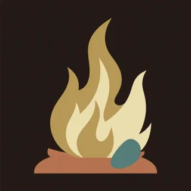

Pieces · handpan piece for D Kurd
Wildfire
A long one that catches, burns, dies to embers, and roars at the end.

- Kind
- Pieces
- Tempo
- 108 BPM
- Time signature
- 4/4
- Length
- 51 bars, about 113 seconds
- Notes used
- D3, A3, B♭3, C4, D4, E4, F4, G4, A4, C5
- Added
- 2026-10-11
Play in AlamutLearn bar by bar
About this pattern
Spark is a few soft notes. Catch is the groove: count 1 2 3, 1 2 3, 1 2 3, 1 2 3, 1 2, 1 2, with a note on each 1 and taks between. Spread moves the same groove up the pan. Blaze fills every sixteenth, so the hands trade without a gap and the bass lands loud on 1 and 3. Ember drops to two soft notes struck together. Roar is the peak: two notes together on 1 and 3, with the high A and high C thrown between them. Learn Catch first, then Blaze at 70.
Notation
Each line is one bar in 4/4. Numbers are the pan's fields, a dot is a rest, brackets hold notes struck together, and × is a tak on the shoulder. Read the number legend below.
Spark
4 . . . . . . . . . 5 . . . . .6 . . . . . . . . . 5 . 4 . . .4 . . . . . 5 . 6 . . . . . 8 .7 . . . . . . . 5 . . . . × . ×
Catch
0 . × 4 . × 6 . × 5 . × 4 . 1 .0 . × 4 . × 6 . × 8 . × 6 . 5 .2 . × 4 . × 6 . × 8 . × 6 . 4 .3 . × 5 . × 7 . × 9 . × 7 . 5 .
Catch
0 . × 4 . × 6 . × 5 . × 4 . 1 .0 . × 4 . × 6 . × 8 . × 6 . 5 .2 . × 4 . × 6 . × 8 . × 6 . 4 .3 . × 5 . × 7 . × 9 . × 7 . 5 .
Spread
1 . × 5 . × 7 . × 8 . × 7 . 5 .2 . × 6 . × 8 . × 9 . × 8 . 6 .3 . × 7 . × 8 . × 9 . × 8 . 7 .0 . × 8 . × 9 . [08] . . . 5 6 7 8
Blaze
0 4 5 6 5 4 5 6 0 4 5 6 7 8 7 80 8 9 8 7 6 7 6 0 8 9 8 7 6 5 .2 3 4 5 6 5 4 5 2 3 4 5 6 7 8 .3 4 5 6 7 6 5 6 3 4 5 6 7 8 9 80 8 9 8 9 8 9 8 0 8 9 8 9 8 7 .2 7 6 7 6 5 6 7 2 7 6 7 6 5 4 .3 8 7 8 7 8 7 8 3 8 7 8 9 8 9 81 8 9 8 7 8 9 . [09] . . . . . . .
Ember
[04] . . . . . . . 6 . . . 5 . . .4 . . . . . . . . . . . 1 . . .[27] . . . . . . . 8 . . . 6 . . .6 . . . 5 . . . 4 . 5 . 6 . 7 .
Catch
0 . × 4 . × 6 . × 5 . × 4 . 1 .0 . × 4 . × 6 . × 8 . × 6 . 5 .2 . × 4 . × 6 . × 8 . × 6 . 4 .3 . × 5 . × 7 . × 9 . × 7 . 5 .
Blaze
0 4 5 6 5 4 5 6 0 4 5 6 7 8 7 80 8 9 8 7 6 7 6 0 8 9 8 7 6 5 .2 3 4 5 6 5 4 5 2 3 4 5 6 7 8 .3 4 5 6 7 6 5 6 3 4 5 6 7 8 9 80 8 9 8 9 8 9 8 0 8 9 8 9 8 7 .2 7 6 7 6 5 6 7 2 7 6 7 6 5 4 .3 8 7 8 7 8 7 8 3 8 7 8 9 8 9 81 8 9 8 7 8 9 . [09] . . . . . . .
Roar
[08] . . 9 . . 8 . [09] . . 8 7 6 5 .[08] . . 9 . . 8 . [09] . 8 . 9 . 8 .[29] . . 8 . . 9 . [27] . . 8 7 6 5 .[38] . . 9 . . 8 . [36] . 7 . 8 . 9 .[08] . . 9 . . 8 . [09] . . 8 7 6 5 .[06] . . 8 . . 9 . [09] . 8 . 9 . 8 .[29] . 8 . 9 . 8 . [38] . 9 . 8 . 9 .[18] . 9 . 8 . 7 . [09] . . . . . . .
Ash
0 . × 4 . × 6 . × 5 . × 4 . 1 .0 . . . 4 . . . 1 . . . . . . .[01] . . . . . . . . . . . . . . .
Number legend
0D3 (ding), 146.8 Hz1A3, 220.0 Hz2B♭3, 233.1 Hz3C4, 261.6 Hz4D4, 293.7 Hz5E4, 329.6 Hz6F4, 349.2 Hz7G4, 392.0 Hz8A4, 440.0 Hz9C5, 523.3 Hz×tak, a rim or shoulder tap
آتشسوزی
قطعهای بلند که گُر میگیرد، میسوزد، به اخگر میرسد و در پایان میغرد.
«جرقه» چند نت نرم است. «درگرفتن» ریتم است: بشمارید ۱ ۲ ۳، ۱ ۲ ۳، ۱ ۲ ۳، ۱ ۲ ۳، ۱ ۲، ۱ ۲، با یک نت روی هر ۱ و تَکها میانشان. «گسترش» همان ریتم را به بالای ساز میبرد. «شعله» همهٔ دولاچنگها را پر میکند، پس دستها بیفاصله نوبتی میزنند و باس روی ۱ و ۳ پرصدا مینشیند. «اخگر» به دو نت نرم همزمان میرسد. «غرش» اوج قطعه است: دو نت همزمان روی ۱ و ۳، با لای بالا و دوی بالا که میانشان پرتاب میشوند. اول «درگرفتن» را یاد بگیرید، بعد «شعله» را با ۷۰.
More Pieces
Original pieces with named sections, written for this instrument.